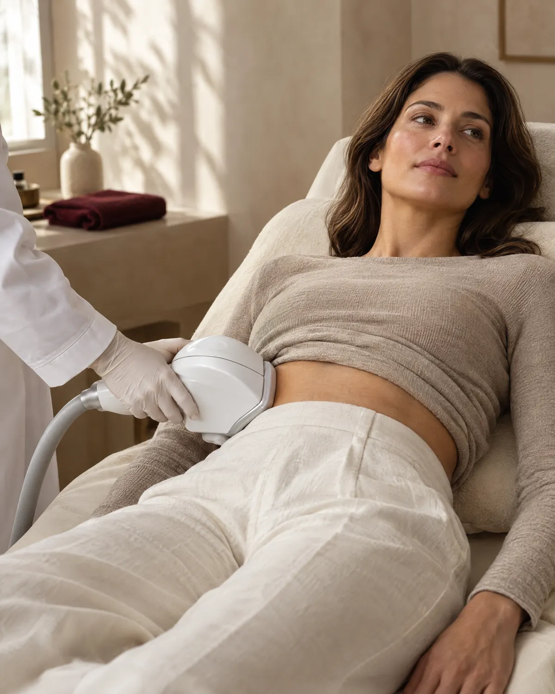
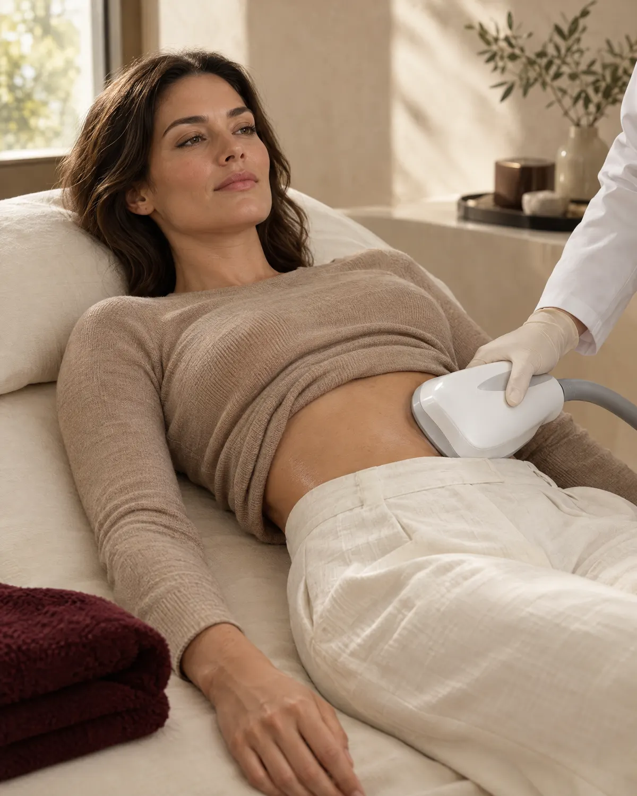

01 / 07
Abdomen
- Cómo lo vives
- La parte baja del abdomen, la que se marca con el pantalón o el vestido.
- Lo que buscamos
- Un abdomen más plano y una silueta más limpia de perfil.
- Precio
- $800.000 por sesión
Criolipólisis · Medellín
Enfriamos la grasa localizada y tu cuerpo la elimina solo. Sin cirugía, sin agujas y sin incapacidad.
Sesión por zona$800.000+ valoración médica previa
Te respondemos en minutos por WhatsApp, en horario de atención.

Tu proceso
¿Qué zona te molesta?
Si esto te pasa
Hay grasa que no responde a la dieta ni al ejercicio: se acumula en zonas puntuales, muchas veces por genética.
Haces dieta y ejercicio, y ese rollito sigue ahí.
La ropa ajustada te marca los gorditos de los lados.
Quieres un cambio, pero no quieres cirugía ni incapacidad.
Te da miedo pagar por un tratamiento que no te sirva.
La criolipólisis trata justo esa grasa: la localizada, la que se pellizca.
Quiero mi valoraciónCómo funciona
No es una dieta ni un masaje: la criolipólisis elimina células de grasa de la zona tratada, y tu cuerpo hace el resto.
La grasa localizada vive en la capa que está debajo de la piel. Esa es la que forma el “rollito”.
El frío controlado llega a la grasa de la zona. La piel y el músculo quedan protegidos.
Las células de grasa que se enfriaron se apagan y tu cuerpo empieza a retirarlas, de forma natural.
Quedan menos células de grasa en la zona: la capa es más delgada y se nota en tu silueta.
Las células de grasa se afectan con el frío antes que la piel o el músculo. Por eso se pueden enfriar sin lastimar lo demás.
No se encoge ni se “derrite”: deja de funcionar y entra en un proceso natural de eliminación.
En las semanas siguientes tu organismo la retira solo, como hace con cualquier célula que ya cumplió su ciclo.
Test de 1 minuto
Cinco preguntas de un toque. Al final te decimos qué te conviene, con honestidad.
La decisión final la toma la médica en tu valoración.
Zonas que tratamos
Elige tu zona: te contamos qué buscamos ahí y nos escribes con un toque.
¿No sabes cuál es la tuya? Haz el test de 1 minuto.

Paso a paso
La médica revisa la zona, tu historia y si eres candidata. Sales con tu plan por escrito.
El aplicador va sobre la zona y enfría la grasa mientras descansas. Al terminar, sigues con tu día.
Tu cuerpo elimina las células de grasa. Desde la semana 3 lo notas en la ropa.
Entre la semana 8 y la 12 medimos el resultado contigo y, si hace falta, planeamos otra sesión.

Por qué en noon
La criolipólisis funciona cuando se indica bien. Por eso en noon no empieza en la máquina: empieza en tu valoración.
Antes de que preguntes
Los primeros minutos se siente frío intenso y algo de presión; luego la zona se adormece. La mayoría de las personas lo describe como tolerable. Al retirar el frío puede haber un hormigueo que pasa en pocos minutos.
Depende de la zona y de cuánta grasa tengas ahí. Muchas personas necesitan entre 1 y 3 sesiones por zona, separadas de 6 a 8 semanas. En tu valoración te decimos cuántas y por qué.
Desde la tercera semana empiezas a notar el cambio, y el resultado completo se ve entre la semana 8 y la 12, cuando tu cuerpo termina de eliminar las células.
Las células de grasa que se eliminan no regresan. Las que quedan sí pueden crecer si subes de peso, por eso el resultado se cuida con tus hábitos.
No. La criolipólisis moldea zonas puntuales; no cambia tu peso en la báscula. Si tu meta es bajar de peso, te orientamos con el manejo médico del peso.
Lo habitual es enrojecimiento, sensibilidad o adormecimiento temporal en la zona. Muy rara vez la grasa de la zona puede reaccionar al revés y aumentar; si pasa, tiene manejo. Por eso la indica y la controla un médico.
No se recomienda en embarazo o lactancia, en personas con enfermedades que reaccionan al frío (como urticaria por frío), con hernias en la zona o con problemas de circulación en el área. Lo revisamos en tu valoración.
Sí. Se combina muy bien con radiofrecuencia para mejorar la firmeza de la piel, y con hábitos de alimentación y ejercicio para mantener el resultado.
Cada sesión cuesta $800.000 por zona. Muchas personas necesitan entre 1 y 3 sesiones por zona: en tu valoración médica te decimos cuántas necesitas tú y te damos el plan por escrito. La valoración se paga aparte.
noon Clinic · Medellín
Te decimos qué se puede lograr en tu zona, cuántas sesiones necesitas y si eres candidata. Sin compromiso de hacerte el tratamiento.
Quiero mi valoraciónTe respondemos en minutos por WhatsApp, en horario de atención.
La valoración no se abona al tratamiento y su valor no se devuelve. Términos y condiciones